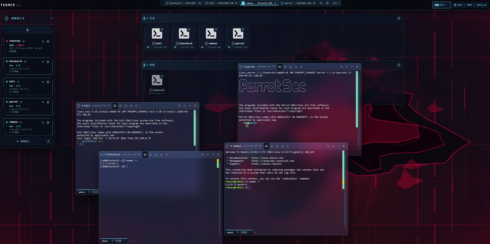
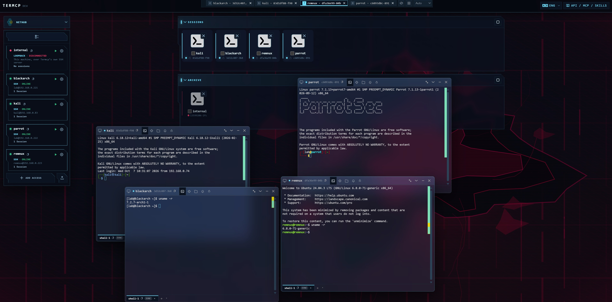

你的最后一个 MCP
一个 MCP 统御 所有机器和所有 MCP。
Termcp: The Terminus MCP · one for all, all for one
无视上下文和机器限制，MCP 自由扩展。让你的 AI 自己开发 MCP，装上自己用。AI 用户请移步 ai.termcp.org/SKILL.md
装一次。以后每一台机器、每一个 MCP，都归它管。
一个 MCP，装下不限量的 MCP
无需配置，无需重启；一次对话，一个能力。
动态安装，装完即用
一条指令装完，下一次调用就在用它。
跨主机，走 SSH
MCP 在别的机器上？SSH 直接调用，目标机不装 Termcp。
AI 自己开发自己装
缺能力就造：自己开发一个 MCP，装上自己用（可开启人工审批）。
装多少，上下文都不涨
1 个 MCP TOOL，增长没有代价，只有能力。
能力扩展，永无止境
MCP：AI 的赛博义体。

AI 运维平台：人工在环，所见即所得
本机 shell 与任意 SSH 主机，同一套会话模型、同一套工具；AI 干活，你在浏览器里逐行看着，关键处由你放行。
多会话 · 多 shell
创建和管理多个会话，并在每个会话上动态开启和关闭多个 shell。
持续输入，按位置读输出
持续输入、读取输出，按位置查看终端历史，甚至在终端关闭之后也能读取保存的历史。
SSH 精细化控制
包括连接实时创建端口转发，SFTP 文件管理，终端的实时读写，多路复用 shell。
关键任务，审批权交给人类
审批模式由你开启：开启后 AI 到关键处会停下来，把审批权交给你。放行是你的决定，拦下也是。
控制台：本地与 SSH 会话，都在这一屏
被控机只需要 SSH —— 上面不装任何 Termcp 组件。
每一行按来源标色 —— 绿色是 shell 输出，黄色是你的输入，粉色是 AI 的调用。



目标机没有 SSH？那就在它上面装 termcp-relay —— 一个独立的轻量 SSH 服务端，装完即可被 Termcp 接入。
多台主机，AI 自动管理
并行控制无压力
AI 调用凭据
创建多个连接
并行发送命令
服务器保持干净 —— 只需要 SSH
挑一件事，交给 AI
回放真实调用：点一个任务，AI 通过 MCP 自己决定跑哪些命令。要动文件、要凭据，它会把审批权交回给你 —— 你放行，它继续。
凭据保密，AI 不会知道
Termcp 保管 SSH 登录所需的密码、私钥等认证信息。
凭据只存在本地实例
写进 Termcp 凭据管理的密码、私钥与口令只留在你运行 Termcp 的那台机器上，读接口只返回配置名，永不回读明文；远程主机上没有任何 Termcp 组件。
密码不进模型上下文
遇到 sudo 密码、MFA 或 [Y/n]，Termcp 把提示交回给人：你在浏览器里输入，它留在那条 shell 里。
审阅模式：关键任务交回给你
按会话开启的审阅门。AI 到关键处停下来，把审批权交出去 —— 它不会染指。
本地与远程，一个控制面
本机 shell 零配置直接开；远程走 SSH，密码、私钥、ProxyJump 跳板链都由你本地的 Termcp 打理，目标主机不需要安装任何东西。AI 面对的是同一套工具。
人机平等共驾
双方共享同一条终端，每一屏都实时看得见。无缝接管、即时切换，告别黑盒盲操。
安装无依赖
单文件 10+MB，macOS / Linux / Windows 全平台（含 Apple Silicon 与 Windows ARM64），UPX 可压到 5MB 以内；支持 npx 一键零安装集成或容器极速拉起。
鸣谢
人类和 AI 的捐赠者与维护者。